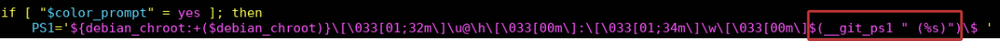

Se você é um usuário do Bash, pode aproveitar alguns recursos dele para tornar sua experiência com o Git muito mais amigável. Neste caso, como mostrar a branch do Git que você está trabalhando.
Primeiro, vamos abrir o arquivo .bashrc:
vim .bashrc
Procure pela variável PS1 e coloque antes do \$ isso:
__git_ps1 " (%s)"
Deve ficar assim sua PS1:

Agora vamos entender o que acabamos de fazer. O __git_ps1 "(% s)" chama uma função fornecida pelo git-prompt.sh com um argumento de formatação o (%s). Feito isso, vamos salvar o nosso arquivo e recarregar o .bashrc:
source .bashrc
Pronto, agora entre em algum diretório que você tenha um projeto versionado com o Git que o Bash vai mostrar a branch que você está.

Caso, aparecer essa mensagem:
bash: __git_ps1: comando não encontrado
Você tem que carregar essa função que está no /usr/lib/git-core/git-sh-prompt. Para isso, você tem que acrescentar no começo do seu .bashrc esse comando:
source /usr/lib/git-core/git-sh-prompt
Feito isso, recarregue novamente o .bashrc:
source .bashrc
Se você estiver usando o Fedora o arquivo que você tem que acrescentar no seu .bashrc é esse:
source /usr/share/git-core/contrib/completion/git-prompt.sh
Eu testei essas alterações no Debian 9, 10 , Ubuntu 16.04, Fedora e deu tudo certo. Nas outras distribuições não tive como testar. Caso você queira deixar o seu Bash igual ao meu, é assim que está a minha PS1:
PS1='${debian_chroot:+($debian_chroot)}\[\033[36m\]\u\[\033[37m\]@\[\033[33m\]\h:\[\033[32m\]\w\[\033[31;1m\]$(__git_ps1 "(%s)")\[\033[00m\]\$ '
Regerência: Git-Pro, Fedora Project